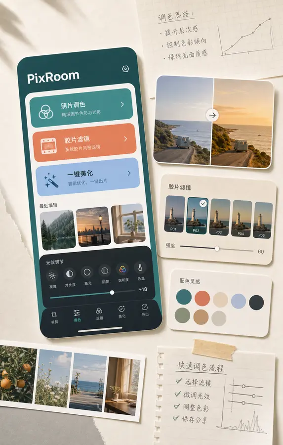
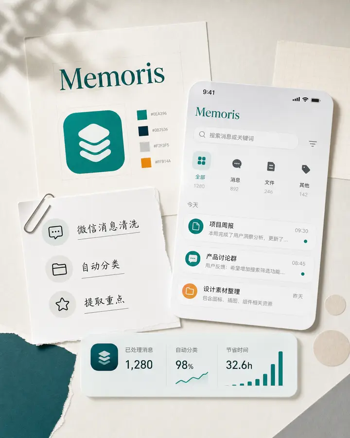
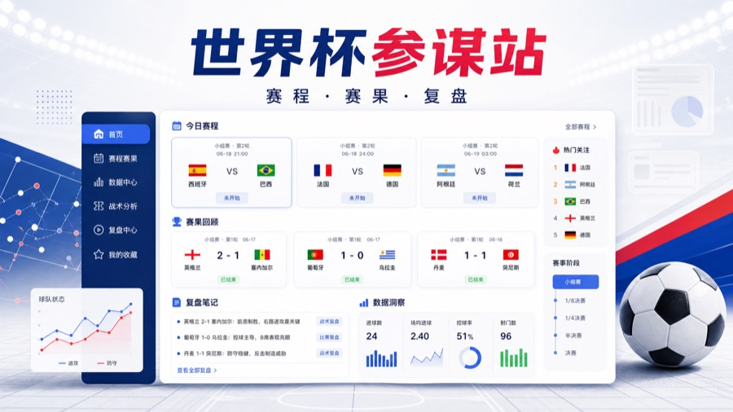
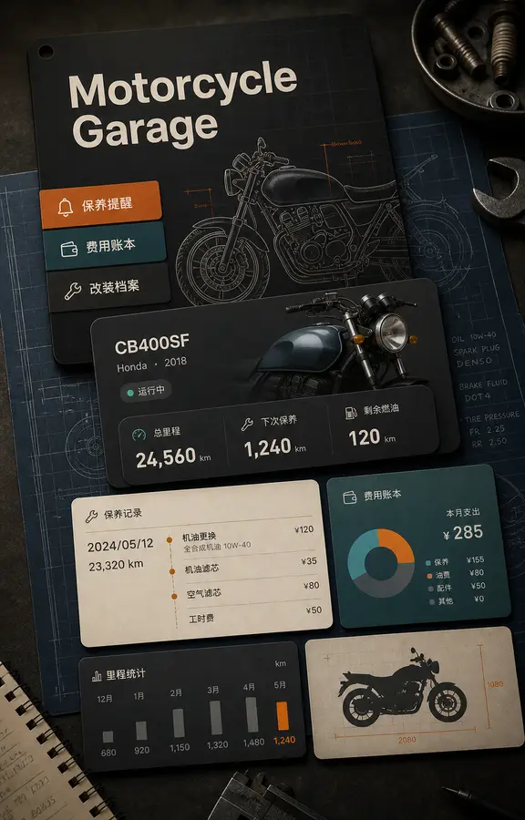
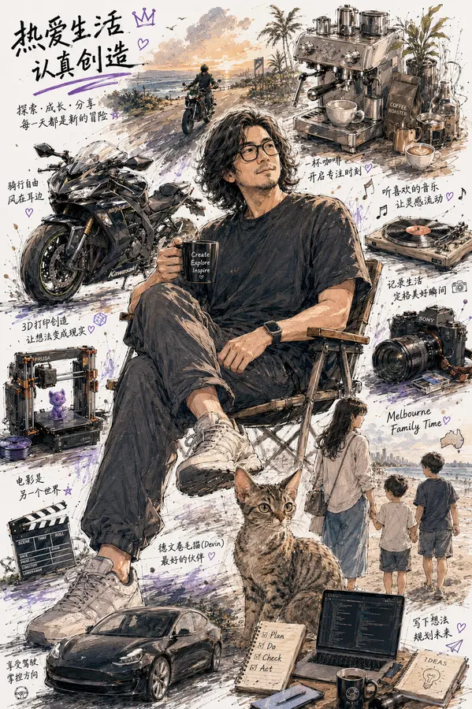

PRODUCTS · TOOLS · EXPERIMENTS
格物集
A collection of products, tools and experiments.
记录正在生长的产品与实验。
一些正在长出来的产品、工具和长期实验。
这里放我正在做和已经跑起来的项目。


6
个项目
3
类方向
1
个主站入口
Selected Work
正在推进的项目
面向真实用户的图片产品、信息收纳工具、经营内容工具、微信小游戏和垂直 App。

网页已上线
工具 / 世界杯 / 赛程复盘
世界杯参谋站
按当天赛程整理比赛、重点场、赛前判断和赛后复盘，比赛结束后持续更新赛果与修正记录。
- 定位
- 世界杯赛程与赛果复盘工具
- 解决
- 当天看哪场、赛后怎么复盘
- 更新
- 赛后自动检查并更新资料
- 展示今日赛程、重点比赛、观看时间和赛前判断。
- 比赛结束后更新赛果、预测偏差和下一场修正。
- 可承接世界杯赛程、比分分析、观赛指南等搜索流量。
网页已上线
AI / 内容生成 / 经营内容
知铺
把今天要宣传的新品、活动或老客提醒，生成能直接发布到朋友圈、小红书、视频号/抖音的内容。
- 定位
- 懂经营的内容助手
- 解决
- 不知道发什么、怎么写、怎么适配平台
- 输出
- 文案、配图提示词、视频提示词
- 输入一句活动需求，整理成用户看得懂、能行动的宣传内容。
- 同一件事自动适配朋友圈、小红书、视频号/抖音。
- 适合餐饮、美业、摄影、服装、工作室等经营场景日常使用。
网页已上线
工具 / SEO / 经营内容
经营小工具
5 个单用途网页工具，快速生成朋友圈文案、小红书文案、活动宣传、豆包生图提示词和商品卖点。
- 定位
- 常用经营内容工具集
- 解决
- 临时写标题、文案、卖点和提示词太慢
- 包含
- 5 个轻量生成器
- 面向搜索用户，直接提供可用的单用途工具入口。
- 不用登录即可生成初稿，适合日常宣传前快速打底。
- 需要完整多平台内容时，再进入知铺做进一步生成。
小程序已上线
小程序 / 照片调色工具
PixRoom
小程序已上线的照片调色工具，把胶片滤镜、色调预设、图片美化和轻量编辑做成手机里随手可用的小工具。
- 定位
- 手机里的轻量照片调色入口
- 解决
- 普通用户调色和套滤镜门槛高的问题
- 合作点
- 滤镜风格、渠道测试、商业化验证
- 适合日常照片、头像、商品图和社媒配图快速调色。
- 已可作为线上小程序使用，适合快速处理日常照片和社媒配图。
- 后续继续补充胶片、清透、复古等可复用色调预设。

小程序已上线
微信小程序 / 摩托车车库
机车库
已迁移为微信小程序的摩托车数字车库，用来记录车辆信息、保养提醒、改装档案和费用账本。
- 定位
- 微信里的摩托车数字车库
- 解决
- 车辆、保养、改装和支出记录分散难追踪
- 合作点
- 微信小程序、车友服务、工具生态
- 当前已改为微信小程序，先完成车辆首页、保养提醒、改装记录和费用账本闭环。
- 小程序默认使用微信本地存储，登录仅用于识别微信用户，车辆账本仍保存在本机。
- 已预留微信登录入口和云同步接口，当前重点是本地数据可靠与核心记录体验。
免费版开放下载
Mac / Windows
memories
面向 Mac 和 Windows 的信息收纳工具，用来把微信、小红书、网页、聊天里看到的有用信息随手放进去，并自动归纳、提取重点。
- 定位
- 桌面端信息与灵感的临时收纳箱
- 解决
- 有用内容分散在聊天、网页和收藏里
- 合作点
- 知识整理、内容创作、效率工具场景
- 当前已提供 Mac 免费版和 Windows 免费版下载。
- 核心是快速收纳链接、文字、截图和灵感，再提炼重点。
- 适合做知识整理、选题沉淀、购物决策和项目资料积累。
正式版审批中
游戏 / 微信小游戏
工位突围
一款微信小游戏，测试版已上架，正式版正在审批，把空间、成长和爽感做成轻量化玩法。
- 定位
- 上班族题材的轻量生存小游戏
- 解决
- 碎片时间需要低门槛爽感体验
- 阶段
- 测试版已上架，正式版在审批
- 测试版已经上架，可用于收集早期体验反馈。
- 正式版正在审批，审批通过后进入更完整的公开发布阶段。
- 商业化方向包含激励广告、分享传播、商城和留存目标。
Changelog
最近项目进展
这里只保留最近两条项目级进展。细微文案、重复推送和配置调整不进入公开更新记录。
memories 免费版开放下载
memories 已上传 Mac 免费版和 Windows 免费版压缩包，首页项目卡片提供对应下载入口。
机车库改为小程序方向
机车库首页内容更新为微信小程序形态，聚焦车辆资料、保养提醒、改装记录和费用账本。
About
把小想法做成能被看见的东西
45 岁以后，我越来越觉得，人生最重要的不是拥有多少东西，而是还能保持多少热爱。
喜欢骑车，不是为了速度，而是为了风吹过头盔那一刻的自由。喜欢咖啡，不只是为了提神，而是享受从生豆到烘焙、从研磨到萃取的过程。
喜欢摄影，不是为了器材，而是想把那些转瞬即逝的时刻留住。喜欢 3D 打印，不是因为技术本身，而是把脑海里的想法一点点变成现实。
喜欢电影和音乐，因为它们总能在某个瞬间，与自己的经历产生共鸣。喜欢折腾电脑、AI 和各种新工具，因为我始终相信，好奇心才是对抗年龄最好的方式。
当然，还有陪伴我生活的德文卷毛猫，和最重要的家人。两个儿子、一位妻子，一起旅行、一起成长、一起经历生活里的平凡与惊喜。
这些看似毫不相关的兴趣，最终拼凑成了现在的我。热爱生活，认真创造。探索、成长、分享。希望未来的很多年里，依然能够保持热爱，持续折腾，继续出发。

FAQ
常见问题
给搜索引擎、AI 搜索和第一次访问的人一个更清晰的项目说明。
格物集是什么？
格物集是老曹的个人产品实验室，集中展示 AI 内容工具、照片调色小程序、世界杯观赛工具、小游戏和摩托车数字车库等长期实验。
现在有哪些可以直接打开的项目？
当前可以直接打开世界杯参谋站、知铺、经营小工具、PixRoom 小程序、机车库小程序和 memories 免费版下载入口；部分项目仍处于测试或持续迭代阶段。
世界杯参谋站提供什么？
世界杯参谋站整理 2026 世界杯赛程、北京时间、比分缓存、赛前判断、三种比分情景和赛后复盘；所有预测只做观赛参考，不构成投注建议。
知铺和经营小工具有什么区别？
知铺更适合把一次活动生成多平台经营内容；经营小工具更轻量，面向朋友圈文案、小红书文案、活动宣传、豆包提示词和商品卖点等单一任务。
PixRoom 和 memories 现在是什么阶段？
PixRoom 是已上线的小程序照片调色工具；memories 是面向 Mac 和 Windows 的信息收纳工具，已提供免费版下载。
机车库支持什么场景？
机车库是微信小程序形态的摩托车数字车库，用来记录车辆资料、保养提醒、费用账本和改装档案。
Contact
合作、试用或交流
如果你对 memories、PixRoom、知铺、小游戏或摩托车软件方向感兴趣，可以通过邮件联系我。
- 项目试用、早期反馈和真实用户访谈
- 渠道合作、内容共创和商业化测试
- 图片工具、效率工具、AI 营销工具、小游戏或摩托车软件方向交流